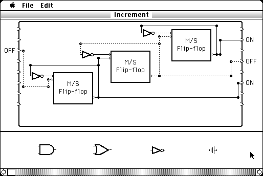

Download
xLogicCircuits.zip (61K) xLogicCircuits 1.2 repackaged into a zipped hfs disk image and checksum file. The disk image can be mounted with Mini vMac.
xLogicCircuits.hqx (90K) xLogicCircuits 1.2 in the original format.
copyright: David J. Eck
mod date: Sep 26, 1993
license: free for non-commercial use
official url :
Downloading TMCM Support Materials
A simple program to construct and simulate logic circuits.

If you find these downloads useful, please consider helping the Gryphel Project, which hosts them.
Here are the md5 checksums for the downloads, signed with Gryphel Key 5:
--------- GRY SIGNED TEXT --------- c9d4fc92d8cd41b15141c34f521f1c59 xLogicCircuits.zip 59513c051cab3b09b273362a74c3f384 xLogicCircuits.hqx ------- BEGIN GRY SIGNATURE ------- Gry/4Xa8CFcUzxdN/AI/lJx798VLCWNO15m5YJXZwiloykEkRkCaZstYGs5fl4m5 OzPOuwT7acJVMvia4tmYCAkmwLdXDkNTRV6htibb4boW34opXG59+ozTDeN22AnA gnSDB58qIHQPMq/SQmy6x87YmeQITqnXpVkeJ5lYT0KKZb8tasZawLe9EvMDAVtz -------- END GRY SIGNATURE --------